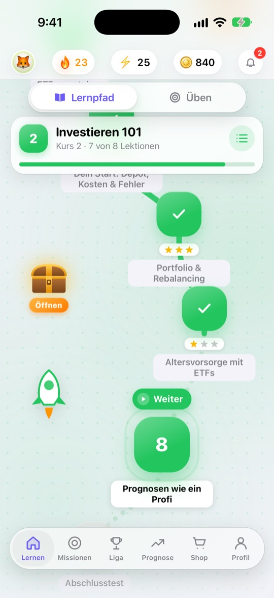

Geldanlage
Investieren lernen: Der Fahrplan für Einsteiger
Investieren ist kein Glücksspiel, sondern Handwerk. Dieser Fahrplan zeigt, in welcher Reihenfolge du die wichtigsten Grundlagen lernst.

Investieren heißt, Geld heute einzusetzen, damit es später mehr wert ist. Das klingt einfach, scheitert aber oft an der Reihenfolge: Viele kaufen die erste Aktie, bevor sie wissen, wie viel Risiko sie tragen können. Dieser Fahrplan sortiert die Grundlagen so, wie man sie am besten lernt.
1. Erst die Basis: Notgroschen und teure Schulden
Bevor Geld an die Börse geht, sollte eine Reserve für Unvorhergesehenes stehen. Häufig genannt werden drei bis sechs Monatsausgaben auf einem Tagesgeldkonto. Teure Schulden wie ein Dispokredit sind meist zuerst dran: Kaum eine Anlage bringt dauerhaft so viel, wie solche Zinsen kosten.
2. Ziel und Zeitraum festlegen
Wofür ist das Geld, und wann brauchst du es? Für die Altersvorsorge in 30 Jahren passt eine andere Anlage als für ein Auto in zwei Jahren. Faustregel: Geld, das du in den nächsten Jahren sicher brauchst, gehört nicht in Aktien.
3. Rendite, Risiko und Verfügbarkeit verstehen
Keine Anlage ist gleichzeitig sehr rentabel, sehr sicher und jederzeit verfügbar. Dieses magische Dreieck der Geldanlage zwingt zu Abwägungen. Aktien bieten langfristig hohe Renditechancen, schwanken aber stark. Tagesgeld ist sicher und verfügbar, bringt aber wenig.
Dazu kommt die Inflation: Bei 2 % Teuerung pro Jahr verliert Geld in zehn Jahren rund 18 % seiner Kaufkraft. Wer gar nicht anlegt, verliert also auch, nur langsamer und unauffälliger.
4. Streuen statt alles auf eine Karte setzen
Wer nur eine Aktie besitzt, hängt am Schicksal eines Unternehmens. Streuung verteilt das Risiko auf viele Firmen, Branchen und Länder. Am einfachsten gelingt das mit einem ETF: einem börsengehandelten Fonds, der einen Index wie den MSCI World nachbildet. Mit einem Kauf bist du an vielen Unternehmen beteiligt. Wie ein ETF genau funktioniert, erklärt der Artikel Was ist ein ETF?.
Auch Welt-ETFs haben Schwerpunkte. Der MSCI World enthält nur Industrieländer und ist stark von US-Aktien geprägt. Der MSCI ACWI nimmt zusätzlich Schwellenländer auf.
5. Sparplan und Zinseszins nutzen
Mit einem Sparplan investierst du regelmäßig einen festen Betrag, zum Beispiel monatlich. Du musst nicht den richtigen Zeitpunkt abpassen, und bei niedrigen Kursen kaufst du automatisch mehr Anteile.
Die eigentliche Kraft liegt im Zinseszins: Erträge werfen selbst wieder Erträge ab. Ein vereinfachtes Beispiel mit 100 € im Monat und angenommenen 7 % pro Jahr, vor Kosten und Steuern:
| Laufzeit | Eingezahlt | Depotwert (gerundet) |
|---|---|---|
| 10 Jahre | 12.000 € | 17.300 € |
| 20 Jahre | 24.000 € | 52.100 € |
| 30 Jahre | 36.000 € | 122.000 € |
Zwischen Jahr 20 und 30 wächst das Depot stärker als in den 20 Jahren davor. Deshalb lohnt sich früh anfangen: Wer mit 25 statt mit 35 startet und bis 65 jeden Monat 100 € anlegt, zahlt nur 12.000 € mehr ein, hat am Ende aber rechnerisch rund 262.000 € statt 122.000 €.
6. Kosten im Blick behalten
Ordergebühren, Spreads und die laufenden Fondskosten (TER) wirken unscheinbar, machen über Jahrzehnte aber viel aus. Wie stark, zeigt die Kostentabelle im Artikel Börse lernen in 7 Schritten. Viele Broker bieten ETF-Sparpläne günstig oder ohne Ordergebühr an.
7. Steuern kennen
In Deutschland fällt auf Kapitalerträge die Abgeltungsteuer von 25 % an, dazu Solidaritätszuschlag und gegebenenfalls Kirchensteuer. Erträge bis zum Sparerpauschbetrag von derzeit 1.000 € pro Person und Jahr bleiben steuerfrei, wenn du deiner Bank einen Freistellungsauftrag erteilst. Bei Aktien-ETFs ist zudem ein Teil der Erträge steuerfrei (Teilfreistellung).
8. Ruhig bleiben, wenn es kracht
Der schwierigste Teil ist nicht die Technik, sondern das Verhalten. In Crashs verkaufen viele Anleger aus Angst, oft nahe dem Tief. Wer seinen Plan kennt und weiß, warum er investiert, hält Schwankungen leichter aus. Hilfreich ist, sich vorher klarzumachen, wie man bei einem Minus von 20 oder 30 % reagieren will.
So lernst du Investieren Schritt für Schritt
Am besten lernst du in kleinen Portionen und mit Übungen. Der Gratis-Kurs „Investieren 101“ in InQuestly erklärt Sparplan, Streuung und ETFs in Lektionen von rund 5 Minuten, jeweils mit Quiz. Vertiefungen wie „ETFs verstehen“ oder „Zinseszins & Sparplan“ gibt es mit InQuestly Pro. Grundbegriffe wie Aktie, Index und Orderarten erklärt der Artikel Börse lernen in 7 Schritten.
Häufige Fragen
Gibt es eine App zum Investieren lernen?
Ja. In InQuestly erklärt der Gratis-Kurs „Investieren 101“ Sparplan, Streuung und ETFs in Lektionen von rund fünf Minuten. Worauf du bei einer Lern-App achten solltest, steht im Artikel Börse lernen App.
Wie viel Geld brauche ich, um mit dem Investieren anzufangen?
Viele Broker bieten ETF-Sparpläne schon ab wenigen Euro im Monat an. Wichtiger als die Höhe ist, dass ein Notgroschen steht und du regelmäßig dabeibleibst.
Ist Investieren dasselbe wie Trading?
Nein. Investieren ist meist langfristig und breit gestreut, Trading meint kurzfristiges Handeln nach festen Regeln für Einstieg, Stop und Ziel. Mehr dazu im Artikel Trading lernen.
Sind ETFs sicher?
ETFs sind Sondervermögen und bei einer Pleite des Anbieters geschützt. Vor Kursverlusten schützen sie aber nicht: Fällt der Markt, fällt auch der ETF.
Wann ist der beste Zeitpunkt zum Einstieg?
Niemand kann ihn zuverlässig vorhersagen. Ein Sparplan nimmt dir die Entscheidung ab, weil du regelmäßig zu unterschiedlichen Kursen kaufst.
Dieser Artikel dient der Bildung und ist keine Anlageberatung. Beispiele sind vereinfacht und ohne Steuern dargestellt.